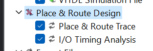
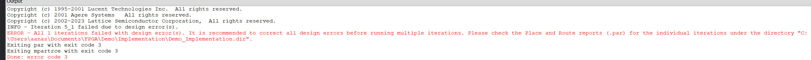
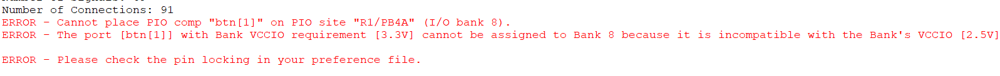
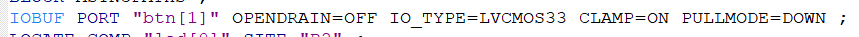
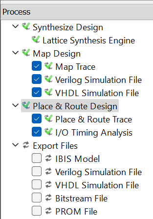
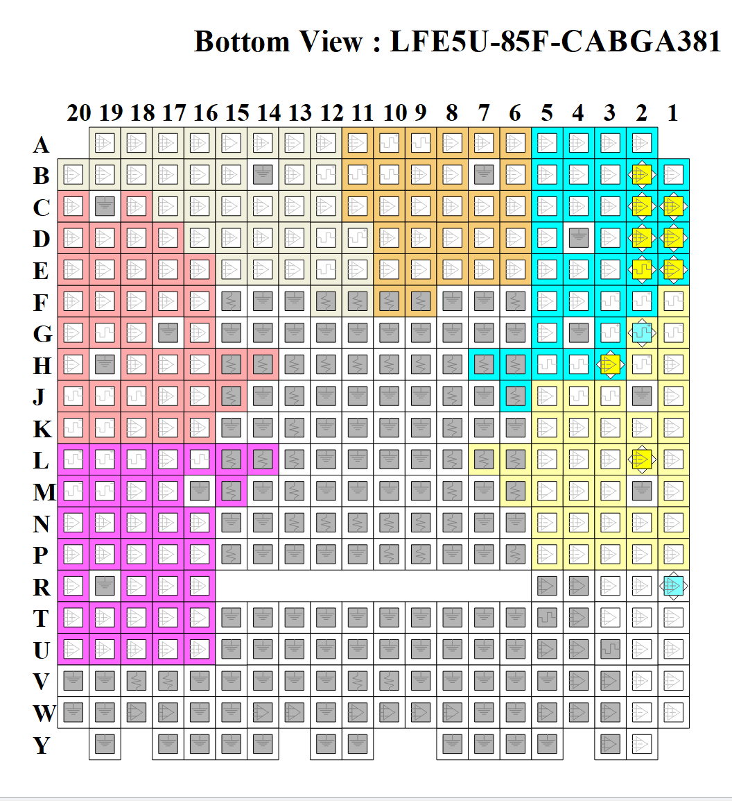
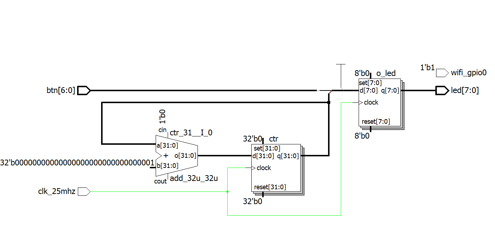
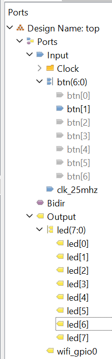
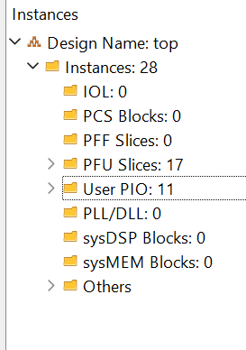
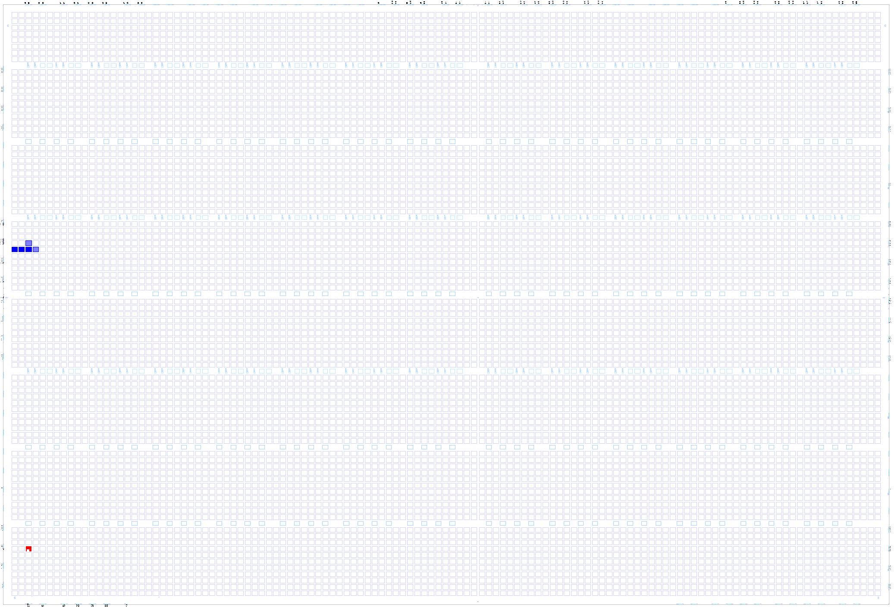

Now, let's place and route our design. This means locating all components onto the silicon of the FPGA. In the "Process" tab, select both "Place & route trace" and "I/O timing analysis", in order to also get the frequencies checked out. Double-click "Place and route design", and... 
Huh. Something failed. Let's check the console. 
Well, that's vague. What could that error mean? I'll admit, this took me much more than it should have to figure out, but... I just had to scroll up in the console output :). 
Okay, this tells us much more about the problem. Let's double-check the LPF file then the Spreadsheet view. 
Huh. That's odd. The LPF is directing the FPGA to clamp the voltage on the pin, effectively constantly pulling it to that voltage. I removed the directive (I could have edited from the Spreadsheet view) and... 
Voilà! All routed.
We can now take a more in-depth look at the design we just created. Looking at the top bar, there's plenty of menus to explore.
Spreadsheet view, we're used to this
Package view, shows pin assignments on the FPGA chip itself

Notice slightly more gray symbols for pins in use, as well as green interior for inputs. Hovering over any pins reveals their use and assignment.
Netlist analyzer, displays the netlist of the design, allowing for a visualization of the logical blocks of our device

I'm afraid my inexperience leaves me incapable of further explaining this topic :).
Netlist view, displays inputs and outputs, as well as their types (if clock inputs or not)

NCD view: I'm not sure what this is, from what I've found, it refers to the "Native Circuit Description", a tree that shows resources (logical blocks of an FPGA) used.

We'll skip Clarity designer for now, as well as the Reveal modules
Floorplan view: Shows the location of each logical block

Physical view: Shows the location of each block, the links between them, as well as the elements that comprise each block. You're further able to dive into each "Slice and see its components"